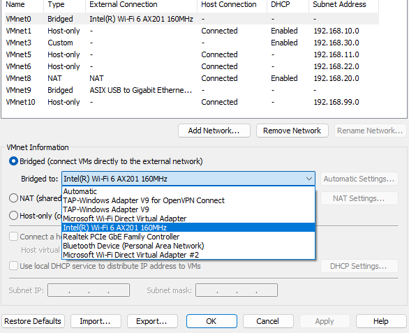
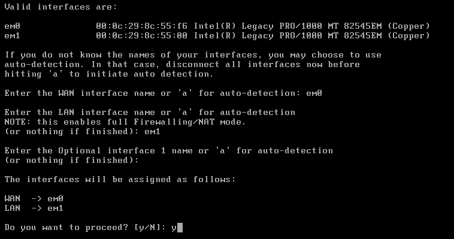
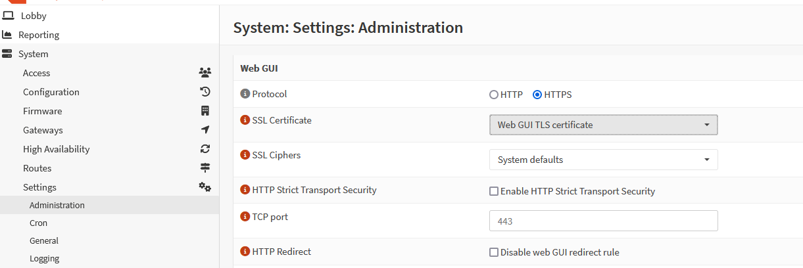
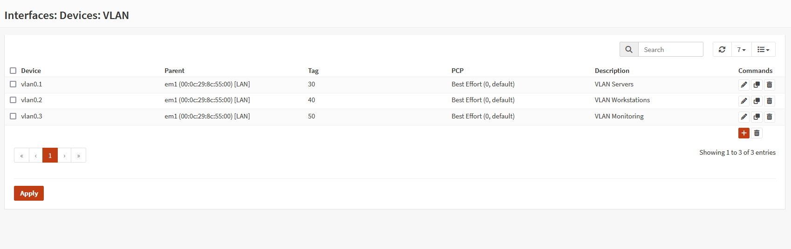
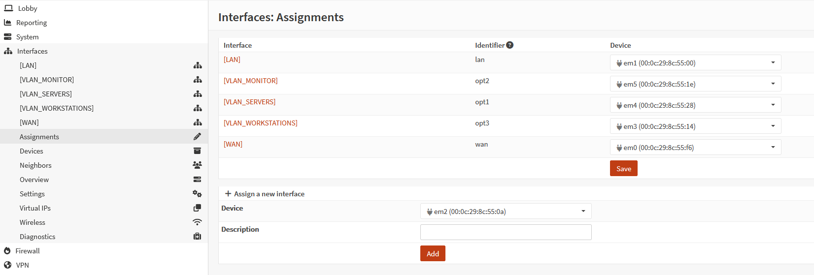
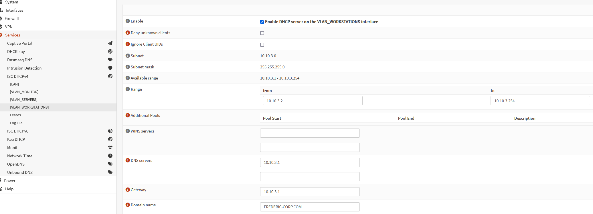
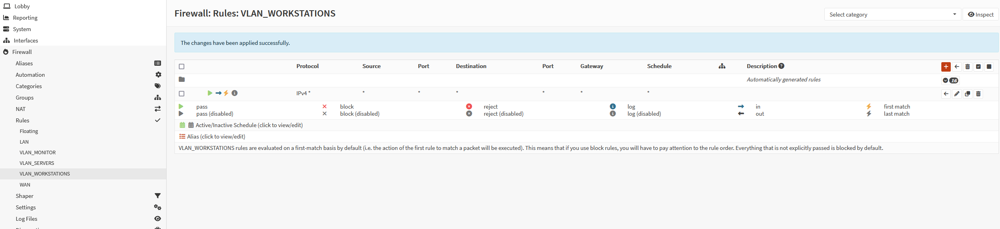
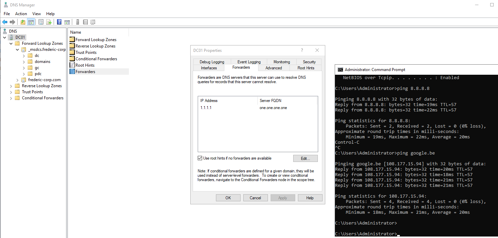

Details
LAN: VmWare LAN Segment 1 - Static IP 192.168.1.100
WAN: VmWare VmNet0 (bridged to my hosts wifi adapter) - DHCP IP 192.168.X.167
VLAN_WORKSTATIONS - EM3 - DHCP 10.10.3.0/24
VLAN_MONITOR - EM5 - Static 10.10.2.0/24
VLAN_SERVERS - EM4 - Static 10.10.1.0/24
WEB GUI: https://192.168.X.167/
USER: root
PW: opnsenseSetup OS
- Download ISO - I installed “OPNsense-25.1-dvd-amd64.iso”
- Specify network adapters / RAM
- One should be bridged for internet connectivity (WAN interface)
- I’ll use VmNet0 in bridge mode, make sure to select an interface
- “Automatic” doesn’t always work (maybe because of VPN interfaces etc)

- The other should be a “LAN Segment” in VmWare, this is the interface our hosts will connect to
- One should be bridged for internet connectivity (WAN interface)
- Boot from ISO, follow installation use the credentials
installer:opnsense- Set belgian keyboard layout
- Select UFS installation
- Select our 20GB vmdk drive
- reboot
- Setup the interfaces. Login using the creds
root:opnsense- Select option 1 “Assign interfaces”
- For WAN use em0 interface (the bridged interface, check vm settings to verify MAC address)
- For LAN use em1 interface (the LAN segment, check vm settings to verify MAC address)

- Set interface IP addresses
- Set LAN (em1) to 192.168.1.100, netmask 24
- For WAN (em0) select DHCP, it will assign an IP address from the bridged network
- Access the GUI on the IP assigned to WAN eg
http://192.168.X.167/- For security reasons GUI access from WAN is restricted, so temporarily disable the firewall in the shell using
pfctl -d
- Enable HTTPS (
System > Settings > Administration)
- Go to
Interfaces > WANand uncheck “block private networks”
- Go to
Firewall > Settings > Advancedcheck both “Disable reply-to on WAN rules” and “ Disable administration anti-lockout rule”
- Go to
Firewall > WANcreate rule to allow HTTPS set destination to “WAN address”
- Full reboot is needed
- For security reasons GUI access from WAN is restricted, so temporarily disable the firewall in the shell using
OPNSense is now configured to allow GUI access from WAN. This is a misconfiguration. In production this would mean the firewall can be compromised from the outside (also note the default credentials). Allowing access to the internal network.
Create VLANS
- Create 3 Vmnet (Host-Only) virtual network adapters. Disable VmWare DHCP.
- Go to
interfaces > Devices > VLANS - Create 3 VLANS (Servers, Workstations, Monitoring). Use LAN as interface

- Assign IPs to VLANS
- Go To
Interfaces > Assignmentsclick add for all vlans
- Enable interfaces and set an IP
- For vlan0.1 (servers) - em4 interface vmnet10 - Static Ipv4 10.10.1.0/24
- for vlan0.2 (workstations) - em3 interface VmNet12 - Static Ipv4 10.10.3.0/24
- for vlan0.3 (monitoring) - em5 interface vmnet11 - Static Ipv4 10.10.2.0/24

- Go To
- Setup DHCP for vlan0.2 (workstations)
- Go to
Services > DHCPv4 > vlan0.2 (VLAN_WORKSTATIONS)
- Enable DHCP, set range, gateway, DNS & domain

- Go to
- Add firewall rules to allow traffic from the VLANS

- This configuration allows traffic from VLAN to another VLAN and also to the outside world. So a misconfiguration.
- Change VMs network adapters to the corresponding VLAN
Client - WIN11
- Assign the network adapter to VmNet12 (10.10.3.0/24)
- automatically receives IP over DHCP
DC - WIN Server 2019
- Assign the network adapter to VmNet10 (10.10.1.0/24)
- In control panel, update IP to static address 10.10.1.100
- Keep DNS on 127.0.0.1. This is needed to resolve LDAP queries etc
- Add 1.1.1.1 as forwarder in
dnsmgmt.msc